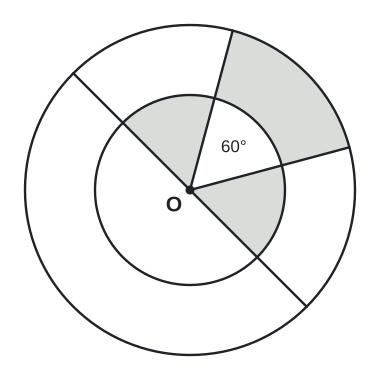
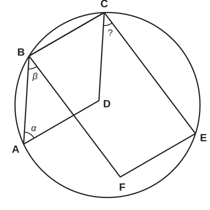
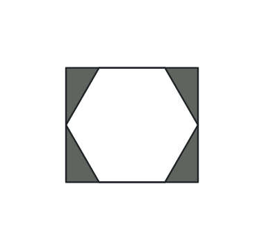

a² − b² = (a − b)(a + b) – לא מחשבים כל ריבוע לחוד.
נבדקהפתרון תואם את מפתח התשובות של הספר.
שאלה 2
בעת נסיעה במהירות של 50 קמ"ש מנוע של רכב צורך 1 ליטר עבור כל 10 ק"מ של נסיעה. כאשר הרכב מאיץ ונוסע מהר יותר, צריכת הדלק של הרכב משתנה ל־1 ליטר עבור כל 5 ק"מ של נסיעה. בשעה 8:00 אילן יצא לנסיעה ברכבו. עד 8:30 נסע אילן במהירות של 50 קמ"ש, ולאחר מכן, עד השעה 10:00 האיץ ונסע במהירות של 80 קמ"ש.
כמה דלק צרך רכבו של אילן בנסיעה זו?
הצגת הפתרון
התשובה הסופית3תשובה (3)26.5 ליטר
דרך הפתרון והסבר
נחלק את הנסיעה לשני קטעים.8:00–8:30 – חצי שעה ב־50 קמ"ש:25 ק"מ. צריכה: ליטר לכל 10 ק"מ ⇐ 2.5 ליטר.8:30–10:00 – שעה וחצי ב־80 קמ"ש:120 ק"מ. צריכה: ליטר לכל 5 ק"מ ⇐ 24 ליטר.סך הכול:2.5 + 24 = 26.5 ליטר
💡 הלקח צריכה שונה בכל מהירות – מחשבים כל קטע בנפרד.
🔁 דפוס חוזרתנועה
דרך = מהירות × זמן. זה לקראת זה – מחברים מהירויות; באותו כיוון – מחסירים.
נבדקהפתרון תואם את מפתח התשובות של הספר.
שאלה 3

בסרטוט שלפניכם הנקודה O היא מרכז שני המעגלים. רדיוס המעגל הגדול הוא R ס"מ ורדיוס המעגל הקטן הוא r ס"מ.
על פי נתונים אלו ונתוני הסרטוט, מה גודל השטח הכהה שבסרטוט (בסמ"ר)?
הצגת הפתרון
התשובה הסופית3תשובה (3)⅙(πR² + πr²)
דרך הפתרון והסבר
הקוטר וכל אחד מהרדיוסים יוצרים שלוש זוויות באותו צד של הקוטר, וסכומן 180°.הזווית האמצעית (הגזרה שבטבעת) היא 60°, ולכן שתי הגזרות במעגל הקטן יחד 180° − 60° = 120°.השטח הכהה:במעגל הקטן: 120360πr² = 13πr²בטבעת (בין המעגלים), גזרה של 60°: 60360(πR² − πr²) =16(πR² − πr²)סך הכול:13πr² + 16πR² − 16πr² =16(πR² + πr²)
💡 הלקח שלוש זוויות באותו צד של קוטר = 180°.
⚠️ המלכודת שלוש הזוויות באותו צד של קוטר מסתכמות ב־180° – כך מוצאים את הגזרות במעגל הקטן.
🔁 דפוס חוזרמשולשים מיוחדים
משולש שווה צלעות: גובה s√32. במשולש 30-60-90 הניצב מול 30° הוא חצי היתר. 📐 נוסחאות
גזרות וקטעי מעגל
גזרה = θ360 · πr². קטע מעגל = גזרה − משולש. טבעת = π(R² − r²). 📐 נוסחאות
נבדקהפתרון תואם את מפתח התשובות של הספר.
שאלה 4

בסרטוט שלפניכם ABCD הוא מעוין ו־BCEF מקבילית. הקודקודים A, B, C ו־E מונחים על היקפו של המעגל.
על פי נתונים אלו ונתוני הסרטוט, ∢DCE = ?
הצגת הפתרון
התשובה הסופית1תשובה (1)β
דרך הפתרון והסבר
ABCD מעוין, ולכן צלעותיו הנגדיות מקבילות: CD ∥ BA.BCEF מקבילית, ולכן CE ∥ BF.הזווית DCE נוצרת מהקרניים CD ו־CE, והזווית ABF (המסומנת β) נוצרת מהקרניים BA ו־BF.שתי הקרניים של כל זווית מקבילות לשתי הקרניים של השנייה, ובאותו כיוון.זוויות עם שוקיים מקבילות (ובאותו כיוון) שוות.לכן ∢DCE = β.
💡 הלקח מקבילות במעוין ובמקבילית קובעות את הזוויות – המעגל לא תמיד נחוץ.
⚠️ המלכודת המעגל לא נדרש כאן – מספיקות הצלעות המקבילות במעוין ובמקבילית.
🔁 דפוס חוזרזוויות במעגל
זווית מרכזית = הקשת שעליה היא נשענת. זווית היקפית = חצי ממנה. 📐 נוסחאות
נבדקהפתרון תואם את מפתח התשובות של הספר.
שאלה 5
נתון: x מתחלק ללא שארית ב־12.x מתחלק ללא שארית ב־15.
במה מהבאים מתחלק x בהכרח?
הצגת הפתרון
התשובה הסופית4תשובה (4)60
דרך הפתרון והסבר
x מתחלק ב־12 וב־15, ולכן בכפולה המשותפת הקטנה שלהם:12 = 2² · 3, 15 =3 · 5 ⇒LCM =2² · 3 · 5 =60x מתחלק ב־60 בהכרח.למה לא 9, 18 או 45? עבור x = 60: לא מתחלק ב־9, ב־18 ולא ב־45.
💡 הלקח מתחלק בשני מספרים ⇔ מתחלק בכפולה המשותפת הקטנה (60).
🔁 דפוס חוזרכפולה משותפת קטנה
מתחלק ב־a וגם ב־b ⇔ מתחלק ב־LCM שלהם. אירועים חוזרים נפגשים שוב אחרי LCM.
נבדקהפתרון תואם את מפתח התשובות של הספר.
שאלה 6

בסרטוט שלפניכם מלבן החוסם משושה משוכלל.
על פי נתונים אלו ונתוני הסרטוט, מה היחס בין השטח הכהה לשטח המשושה?
הצגת הפתרון
התשובה הסופית3תשובה (3)1:3
דרך הפתרון והסבר
נסמן את צלע המשושה s. המשושה מורכב מ־6 משולשים שווי צלעות:שטח המשושה: 3√32s²המלבן החוסם:רוחבו – המרחק בין שני הקודקודים הקיצוניים: 2s.גובהו – המרחק בין שתי הצלעות המקבילות: √3s.שטח: 2s · √3s = 2√3s²השטח הכהה – המלבן פחות המשושה:2√3s² − 3√32s² = √32s²היחס:√32 : 3√32 = 1 : 3
💡 הלקח מלבן חוסם משושה (צלע s): 2s על √3s, שטח 2√3s²; משושה 3√32s² – כלומר ¾ מהמלבן.
⚠️ המלכודת המלבן ברוחב 2s ובגובה √3s – לא ריבוע.
🔁 דפוס חוזרחסום וחוסם – יחסים קבועים
לכל זוג של צורה חסומה וחוסמת יש יחס קבוע, בלי קשר לגודל. 📐 נוסחאות
תות הנח המון החליט לצבוע מחדש את קירותיה של הפירמידה המשולשת שלו. כל מקצועותיה של הפירמידה שווים, ובסיסה של הפירמידה הוא משולש שווה צלעות שאורך צלעו הוא 20 מטרים. לשם כך הוא שכר צוות של 10 צבעים, בעלי הספק זהה, שכל אחד מהם צובע 10 מטרים רבועים ב־4 דקות.
לכמה זמן (בדקות) זקוקים צוות הצבעים כדי לצבוע את הפירמידה כולה?
הצגת הפתרון
התשובה הסופית2תשובה (2)12√3
דרך הפתרון והסבר
כל המקצועות שווים (20), ולכן כל ארבע הפאות הן משולשים שווי צלעות שצלעם 20.שטח פאה: √34 · 20² = 100√3 מ"רצובעים את הקירות – שלוש הפאות הצדדיות:3 · 100√3 = 300√3 מ"רקצב הצוות:צבע אחד: 10 מ"ר ב־4 דקות = 2.5 מ"ר לדקה. 10 צבעים: 25 מ"ר לדקה.הזמן:300√325 = 12√3 דקות
💡 הלקח פירמידה שכל מקצועותיה שווים – 4 משולשים שווי צלעות. ובודקים יחידות של הקצב.
⚠️ המלכודת הקצב הוא 25 מ"ר לדקה – לא לשעה.
🔁 דפוס חוזרהספק וקצב עבודה
עבודה = מספר עובדים × זמן. קצב נטו = מה שנכנס פחות מה שיוצא.
המרת יחידות ומה שואלים
ממירים יחידות לפני החישוב, ובודקים באיזו יחידה מבקשים את התשובה.
נבדקהפתרון תואם את מפתח התשובות של הספר.
בשאלה נכתב "בשעות", אבל החישוב נותן 12√3 דקות – בדיוק תשובת המפתח. היחידה תוקנה לדקות.
שאלה 8
נתון: 0 < yˣ < 1
איזה מהמצבים הבאים יתכן?
הצגת הפתרון
התשובה הסופית4תשובה (4)אף אחת מהתשובות לא תיתכן
דרך הפתרון והסבר
נבדוק כל מצב:(1) y > 1 ו־x > 1: חזקה חיובית של מספר גדול מ־1 גדולה מ־1 ✗(2) y < −1 ו־x שבר: בסיס שלילי בחזקה שברית אינו מוגדר (למשל (−2)12) ✗(3) −1 < y < 0 ו־x < −1: |y| < 1 בחזקה שלילית – הערך המוחלט גדול מ־1 ✗אף מצב לא ייתכן: תשובה (4).
💡 הלקח0 < yˣ < 1: בסיס > 1 עם מעריך שלילי, או בסיס בין 0 ל־1 עם מעריך חיובי.
⚠️ המלכודת בסיס שלילי בחזקה שברית אינו מוגדר.
🔁 דפוס חוזרמעריך שלילי ובסיס בין 0 ל־1
בסיס בין 0 ל־1: חזקה חיובית מקטינה, חזקה שלילית מגדילה.
ערך מוחלט
|x| הוא המרחק של x מ־0. |x| = k ⇒ x = k או x = −k.
נבדקהפתרון תואם את מפתח התשובות של הספר.
שאלה 9
בקערה יש 5x ליטרים של תמיסת מלח בריכוז של 30%. מה יהיה ריכוז תמיסת המלח אם מהקערה יתאדו 2x ליטרים של מים?